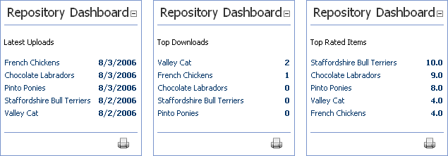

The Repository Dashboard module works together with one Repository module. This module can be configured to function as a category list menu, or can display the Latest Upload, Top Downloads, or Top Rated items for the selected Repository module.
Multiple Repository Dashboard modules can be set to operate with one Repository module.

Three different configurations of the Repository Dashboard Module